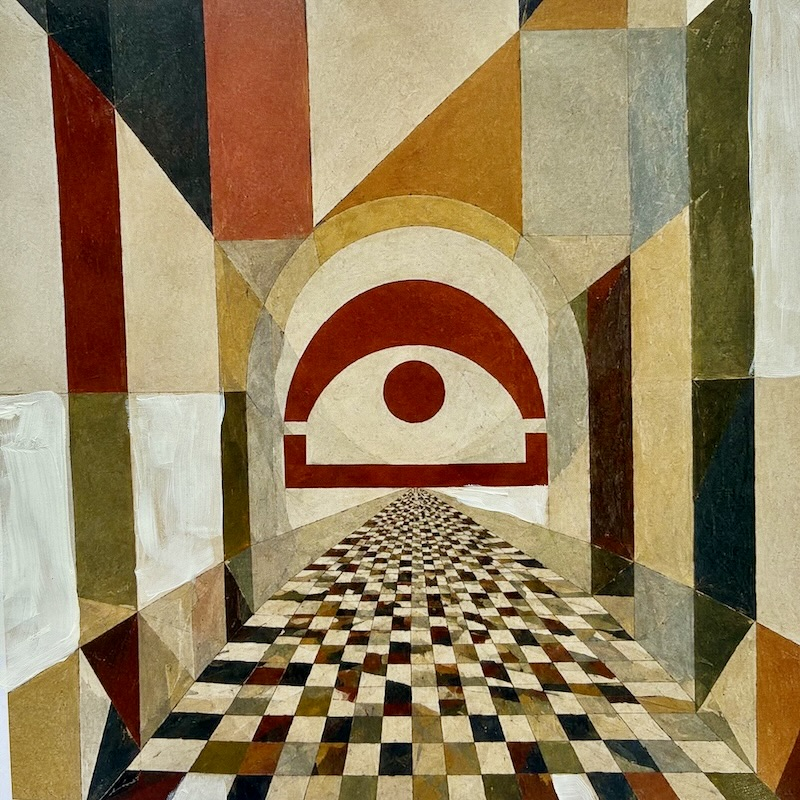

Agapic Chants
Agapic Chants
Heart Choices
Life is full of hard choices.
This one's for the heart.
You probably have a big heart. You feel deeply, and you care about how wide the gap is between how things are and how they should be. A heart that big is a gift, and it can burn us out if we don't also nourish ourselves. This evening is an invitation to sit together, to look at what matters to us, and to find our way back to connection and direction.


Guided by Nathan
I lead Heart Choices in living rooms, halls, and churches, in Berlin and Bonn and wherever I'm invited. If you'd like one where you are, that starts the same way any gathering does.

How the Evening Goes
We begin with singing — simple songs, nothing to prepare, no performance, just voices finding each other until the room grows still. Then we settle, and look honestly and kindly at our lives. What matters to me? Where could I live a little more from love? There's nothing to fix and nothing you have to do afterward. We simply look.
We sing a little more, and then there's an open round. If something moves you, you can say out loud what you'd like to choose — anything, however small. The room says thank you and breathes out, because it's a real relief when someone chooses to live from love. And if you'd rather stay quiet, that's good too. Then one last round of singing, tea, and time to simply be together.
No experience needed.
Be just the way you are.

Heart Choices can also fill a larger room
Even across the darkness, we can hear each other sing.
If they've meant something to you, your support helps make more of them.